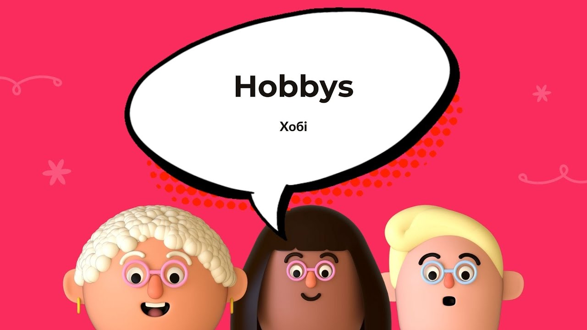
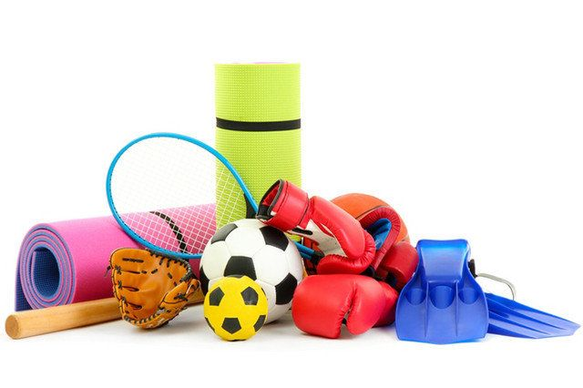
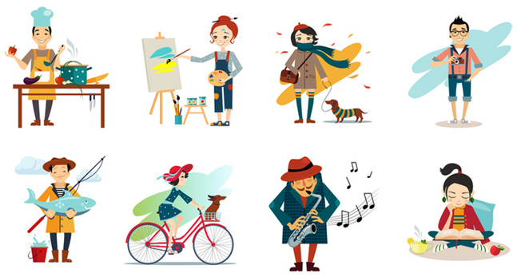

-

Що ж таке хобі?
Хобі - узагальнена назва улюблених занять або розваг, що не є робочою спеціальністю і до яких вдаються у вільний час.
Дізнатися більше → -

Які бувають хобі?
Хобі бувають інтелектуальні (нумізматика, боністика, шахи, інтелектуальне казино, вікторини, настільні ігри), фізичні (спорт, танці, подорожі), емоційні (садівництво, творчість, фотографія, живопис).
Дізнатися більше → -

Як визначити хобі?
Пригадайте, що вас цікавило, коли ви навчались в початковій або середній школі. Які справи дозволяли вам забути про їжу, хлопчиків і друзів. Що Ви могли робити годинами без перерви, а втомившись, розуміти, що це приємна втома?Це і є вашою улюбленою справою.
Дізнатись більше →